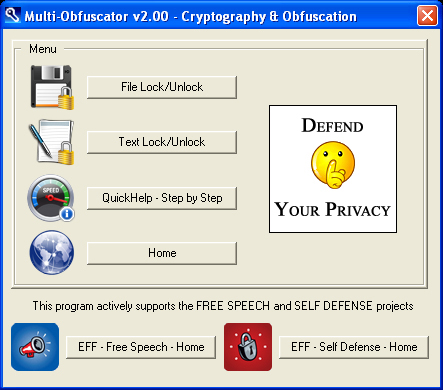

MultiObfuscator 2.00 - Yet not another cryptography SW
|
 MultiObfuscator
MultiObfuscator
Check for more business services: |
MultiObfuscator is a professional cryptography tool:
Unique layers of security and obfuscation:
|
MultiObfuscator is a portable/stealth software:
MultiObfuscator is freeware:
|
 Manual
Manual Internet Review
Internet Review Torrent
Torrent Pad
Pad
{kind=link}
{kind=link}
MultiObfuscator is a professional cryptography tool, with unique features you won't find among any other free or commercial software. MultiObfuscator is 100% free and suitable for highly sensitive data storage and transmission.
Layers of security:
Data is encrypted (1), scrambled (2) and whitened (3).
Layer 1 - Modern multi-cryptography:
A set of 16 modern 256bit open-source cryptography algorithms (chosen from AES Process [1997-2000], NESSIE Process [2000-2003] and CRYPTREC Process [2000-2003]) has been joined into a doublepassword multi-cryptography algorithm (256bit+256bit) : AES / Anubis / Camellia / Cast-256 / Clefia / FROG / Hierocrypt3 / Idea-NXT / MARS / RC6 / Safer+ / SC2000 / Serpent / Speed / Twofish / Unicorn-ALayer 2 - CSPRNG based scrambling:
Encrypted data is always scrambled to break any remaining stream pattern. A new cryptographically secure pseudo random number generator (CSPRNG) is seeded with a third password (256bit) and data is globally shuffled with random indexes.Layer 3 - CSPRNG based whitening:
Scrambled data is always mixed with a high amount of noise. A new CSPRNG is seeded with a forth password (256bit) and data is bit-by-bit split according to a random permutation.
Extra security - Deniable cryptography:
Top secret data can be protected using less secret data as a decoy.Source code:
This program can be considered as a simple Windows GUI to the libObfuscate system-independent open-source library. Users and developers are absolutely free to link to the core library (100% of the cryptography & obfuscation code), read it and modify it.
|  |
|